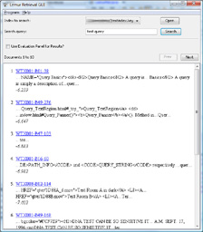

Starting up the retrieval application, it is a blank slate. To begin working with an index, press the "Open" button next to the index drop-down box and browse for an index. More than one index can be loaded and searched on at any given time.
Once you have an index loaded, enter a search query in the textbox and press "search" to submit the query.
The results will be affected by the various retrieval options that are currently set.
An example of the standard search results are shown below:

The search results window will display the documents with the title and snippet of the found documents. You can click on the title of the result to bring up (in a separate window) the document. Also, pressing the "Next" and "Prev" will take you to the next and previous pages of results respectively.
Clicking on the "Use Evaluation Panel for Results?" checkbox will switch the display to the Judgment Scoring Display.